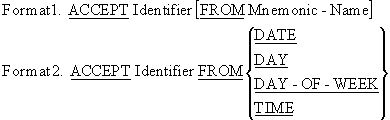

In the COBOL syntax diagrams ( the COBOL metalanguage) upper case words are keywords. If underlined, they are mandatory.
{ } brackets mean that one of the options must be selected
[ ] brackets mean that the item is optional
ellipses (...) mean that the item may be repeated at the programmers discretion.
The symbols used in the syntax diagram identifiers have the following significance:-
$ signifies a string item,
# is numeric item,
i indicates that the item can be a variable identifier
l indicates that the item can be a literal.

The ACCEPT verb is used to get data from the keyboard, a peripheral device, or certain system variables.
01 CurrentDate PIC 9(6).
* CurrentDate is the date in YYMMDD format
01 DayOfYear PIC 9(5).
* DayOfYear is current day in YYDDD format
01 Day0fWeek PIC 9.
* DAY-OF-WEEK is a single digit where 1=Monday
01 CurrentTime PIC 9(8).
* CurrentTime is the time in HHMMSSss format where s = S/100
ACCEPT DATE [YYYYMMDD]
ACCEPT DAY [YYYYDDD]
01 Y2KDate PIC 9(8).* Y2KDate is the date in YYYYMMDD format
01 Y2KDayOfYear PIC 9(7).* Y2KDayOfYear is current day in YYYYDDD format
$ SET SOURCEFORMAT"FREE"
IDENTIFICATION DIVISION.
PROGRAM-ID. AcceptAndDisplay.
AUTHOR. Michael Coughlan.
* Uses the ACCEPT and DISPLAY verbs to accept a student record
* from the user and display some of the fields. Also shows how
* the ACCEPT may be used to get the system date and time.
* The YYYYMMDD in "ACCEPT CurrentDate FROM DATE YYYYMMDD."
* is a format command that ensures that the date contains a
* 4 digit year. If not used, the year supplied by the system
* will only contain two digits which may cause a problem
* in the year 2000.
DATA DIVISION.
WORKING-STORAGE SECTION.
01 StudentDetails.
02 StudentId PIC 9(7).
02 StudentName.
03 Surname PIC X(8).
03 Initials PIC XX.
02 CourseCode PIC X(4).
02 Gender PIC X.
* YYMMDD
01 CurrentDate.
02 CurrentYear PIC 9(4).
02 CurrentMonth PIC 99.
02 CurrentDay PIC 99.
* YYDDD
01 DayOfYear.
02 FILLER PIC 9(4).
02 YearDay PIC 9(3).
* HHMMSSss s = S/100
01 CurrentTime.
02 CurrentHour PIC 99.
02 CurrentMinute PIC 99.
02 FILLER PIC 9(4).
PROCEDURE DIVISION.
Begin.
DISPLAY "Enter student details using template below".
DISPLAY "Enter - ID,Surname,Initials,CourseCode,Gender"
DISPLAY "SSSSSSSNNNNNNNNIICCCCG".
ACCEPT StudentDetails.
ACCEPT CurrentDate FROM DATE YYYYMMDD.
ACCEPT DayOfYear FROM DAY YYYYDDD.
ACCEPT CurrentTime FROM TIME.
DISPLAY "Name is ", Initials SPACE Surname.
DISPLAY "Date is " CurrentDay SPACE CurrentMonth
SPACE CurrentYear.
DISPLAY "Today is day " YearDay " of the year".
DISPLAY "The time is " CurrentHour ":" CurrentMinute.
STOP RUN.
|
|
Results of running ACCEPT.CBL Enter student details using template below Enter - ID,Surname,Initials,CourseCode,Gender SSSSSSSNNNNNNNNIICCCCG 9923453Power NSLM51F Name is NS Power Date is 01 03 1999 Today is day 060 of the year The time is 14:41 |